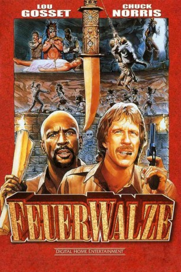
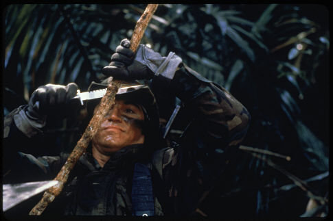
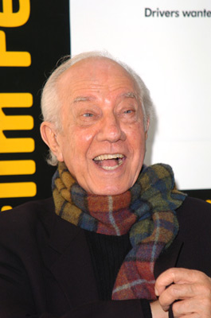

#6074 Feuerwalze
Alternativ: Firewalker
 
 IMDB-Wertung: 4.9 / 10
IMDB-Wertung: 4.9 / 10  Metascore: 0
Metascore: 0 
Zwei sprücheklopfende Haudegen auf der Jagd nach dem Gold der Azteken. Gerade in aussichtslosen Situationen bewährt sich das tolldreiste Duo mit frecher Schnauze und knallharten Fäusten. Gold verdirbt eben den Charakter.
Jahr: 1986
Dauer: 105 Minuten
FSK: 16
Land: USA Studio: Cannon Film DistributorsTonspuren: DTS - ,
Untertitel: Deutsch,
Auflösung: 1080p (1920x1040) Größe: 8499 MB
Genre: Action, Komödie, Abenteuer
Regisseur: J. Lee Thompson
Drehbuch: KalkPostPornProduction
Soundtrack:
Darsteller:
 Chuck Norris als Max Donigan
Chuck Norris als Max Donigan Louis Gossett Jr. als Leo Porter
Louis Gossett Jr. als Leo Porter- Melody Anderson als Patricia Goodwin
- Will Sampson als Tall Eagle
-  Sonny Landham als El Coyote
 John Rhys-Davies als Corky Taylor
John Rhys-Davies als Corky Taylor-  Ian Abercrombie als Boggs
- Zaide Silvia Gutiérrez als Indian Girl
- Robert Wall als Jose
- Richard Lee-Sung als Chinese Man / The General
- Álvaro Carcaño als Willie
- John Hazelwood als Tubbs
- José Escandón als Co-Pilot
- Mario Arévalo als Guerilla Leader
- Juan Jaramillo als Tough Guerilla
- Miguel Ángel Fuentes als Big Man
- Julio Monje als Train Soldier
- Nicolás Jasso als Young Indian
- Jabie Abercrombe als Guerrilla , uncredited
Datei: X:\Person\Chuck Norris\Feuerwalze (1986, FSK16, 1920x1040).mkv seit 26.04.2017
Festplatte: HD Collection-7+mehr(A-Z)+Person
 Es gibt insgesamt 17 Filme in der Gruppe 'Person\Chuck Norris'
Es gibt insgesamt 17 Filme in der Gruppe 'Person\Chuck Norris'